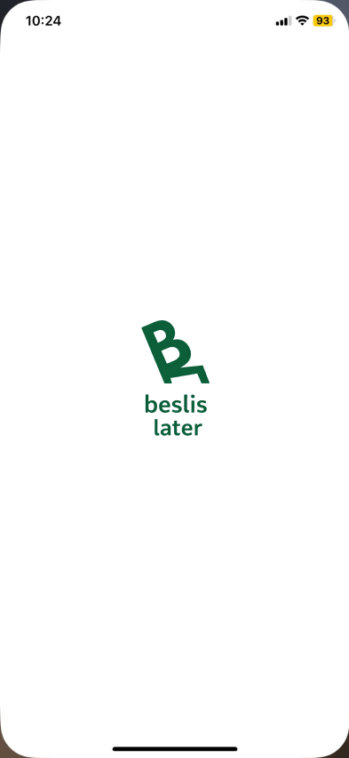

Beslis Later: Gedragsbeïnvloeding in een app design
Intro
Voor het vak Ontwerpen voor Gedragsbeïnvloeding heb ik gewerkt aan een concept waarin ik UX design combineer met psychologie. Ik heb een app ontworpen genaamd Beslis Later, die jongeren helpt om bewuster om te gaan met impulsaankopen.
Het project laat zien hoe je met kleine ontwerpkeuzes gedrag kunt sturen, zonder iets te verbieden.
Het probleem
Veel jongeren doen impulsaankopen zonder hier echt bij stil te staan. Door sociale media, snelle betaalmethodes en constante prikkels wordt kopen steeds makkelijker.
Wat ik interessant vond, is dat dit gedrag vaak niet bewust gebeurt. Mensen kopen iets omdat het goed voelt op dat moment, maar krijgen later spijt of stress.
Ontwerpvraag
“Hoe kunnen we jongeren helpen impulsaankopen uit te stellen, zodat zij slimmere keuzes maken zonder dat iets wordt verboden?”
Mijn rol
Binnen dit project heb ik het volledige proces doorlopen:
- Deskresearch naar gedragspsychologie
- Conceptontwikkeling
- UX design & prototyping
- Visueel design in Figma
- Klantreis en interacties uitwerken
De oplossing: Beslis Later
Beslis Later is een app die een pauzemoment creëert tussen impuls en aankoop. Gebruikers kunnen een product op een wachtlijst zetten. Na 24 uur krijgen ze opnieuw de keuze om het product te kopen.
In die tijd:
- zien ze hoeveel geld ze kunnen besparen
- krijgen ze steun van vrienden
- denken ze bewuster na
De app gebruikt bewust gedragsprincipes zoals:
- Delay effect
- Social proof
- Goal gradient effect
- Authority bias
Mijn aanpak en ontwerp proces
Onderzoek
Ik begon het project met deskresearch naar impulsief koopgedrag.
Uit onderzoek bleek onder andere dat:
- impulsaankopen vaak worden veroorzaakt door emoties zoals stress of verveling
- online winkelen impulsgedrag versterkt door snelle betaalmethodes
- een 24-uurs regel een bewezen manier is om impulsaankopen te verminderen
Deze inzichten vormden de basis voor het concept.
Op basis van deze inzichten heb ik een persona gemaakt:

Lisa koopt regelmatig impulsief producten online, wil beter sparen maar vindt dat lastig en voelt soms spijt na aankopen.
Conceptontwikkeling
Om verschillende oplossingen te verkennen gebruikte ik de Crazy Eight methode. Hierbij heb ik in korte tijd meerdere richtingen bedacht, zonder meteen te oordelen. Dit hielp mij om niet vast te blijven zitten in één idee.

Eerste selectie (COCD-box)
Vervolgens heb ik mijn ideeën beoordeeld met de COCD-box. Hieruit bleek dat de wachtlijst-app het sterkste concept was, omdat het direct inspeelt op het moment van twijfel en gebaseerd is op gedragstheorie.

Conceptvisualisatie
Het gekozen idee heb ik visueel uitgewerkt als eerste concept. Dit hielp om het idee concreter te maken en beter te kunnen uitleggen.
Concept verfijnen (tweede Crazy Eight)
Daarna heb ik een tweede Crazy Eight gedaan om functies voor de app te bedenken. Ik heb hier gekeken naar dingen zoals challenges, sociale interactie en beloningen.

Daarnaast heb ik ook nog een halve Crazy Eight gedaan voor guerrilla marketing:

Van idee naar ontwerp
Ik heb mijn concept uitgewerkt in een storymap.

Deze storymap heb ik weer vertaald naar een volledige customer journey waarin de situatie wordt belicht. Deze bevat de psychologische principes, biases, heuristieken, persuasion patterns, design interventies en affect.

Daarnaast heb ik een guerrilla marketing idee uitgewerkt om de app onder de aandacht te brengen:

De guerilla marketing dient als middel om mensen nieuwsgierig te maken naar Beslis Later, deze nieuwsgierigheid zet aan tot het downloaden van de app.
Wireframe
Voordat ik ben begonnen met het uitwerken in figma heb ik een korte wireframe gemaakt.

Prototype & tools
Voor het prototype heb ik gewerkt in Figma. Voor inspiratie keek ik naar bestaande apps en Pinterest. Daarnaast heb ik ook ChatGPT gebruikt om een gevoel te krijgen voor layout en structuur.
Prototype schermen
Hieronder zie je de belangrijkste schermen uit de app, die samen laten zien hoe de gebruiker stap voor stap door de app beweegt en hoe het ontwerp inspeelt op gedragsbeïnvloeding.

Het beginscherm is bewust heel rustig gehouden. Je ziet alleen het logo van Beslis Later op een witte achtergrond. Ik heb hiervoor gekozen omdat het een duidelijke en simpele start geeft, zonder afleiding. Dit past bij de heuristiek van minimalistisch design en zorgt ervoor dat de gebruiker niet meteen wordt overladen met prikkels.

Op het menuscherm wordt de gebruiker persoonlijk aangesproken, bijvoorbeeld met "Goed bezig, Lisa!". Dit maakt het meteen herkenbaar en motiveert. De voortgangsbalk stopt net voor een mijlpaal. Dit heb ik bewust gedaan vanwege het goal gradient effect: mensen zijn sneller gemotiveerd om door te gaan als ze bijna hun doel hebben bereikt. Ook staan hier opties zoals het toevoegen van een item of praten met Skip, zodat de gebruiker meteen weet wat die kan doen.

In het wachtlijst scherm ziet de gebruiker alle producten waarover die twijfelt. Hier staat ook een timer bij, die laat zien hoelang de 24 uur nog duurt. Dit scherm is gebaseerd op het delay effect: door een aankoop uit te stellen, krijgt de gebruiker meer tijd om na te denken en neemt de impuls af. Daarnaast wordt hier ook social proof gebruikt, bijvoorbeeld door te laten zien dat anderen ook hun aankopen uitstellen.

De 24-uurs melding is een belangrijk moment in de app. Na een dag krijgt de gebruiker een notificatie met de vraag of het product nog steeds nodig is. Dit moment zorgt ervoor dat de beslissing opnieuw wordt bekeken, maar dan minder vanuit emotie en meer vanuit ratio. Dit sluit direct aan op het onderzoek dat laat zien dat uitstellen helpt bij het verminderen van impulsaankopen.

Op het challenges scherm kan de gebruiker meedoen aan spaardoelen, bijvoorbeeld samen met vrienden. Hier heb ik gekozen voor een vorm van gamification, zoals badges en voortgang. Dit maakt het proces leuker en zorgt ervoor dat gebruikers gemotiveerd blijven zonder dat het voelt als een verplichting.

Het sociale gedeelte laat zien wat andere gebruikers doen. Bijvoorbeeld wanneer iemand een aankoop uitstelt of een doel behaalt. Dit versterkt social proof, omdat gebruikers zien dat anderen hetzelfde gedrag vertonen. Hierdoor wordt het makkelijker om zelf ook bewuste keuzes te maken.

In het Skip scherm kan de gebruiker praten met een AI-assistent. Skip is bewust toegevoegd als vorm van antropomorfisme. Door de app een soort "persoonlijkheid" te geven, voelt het minder streng en meer als een hulpmiddel. Skip helpt de gebruiker om na te denken over een aankoop, zonder te oordelen.

In dit artikel scherm wordt gebruik gemaakt van een expert, zoals Erik Scherder. Dit speelt in op authority bias: mensen nemen informatie sneller aan van iemand met kennis of status. Hierdoor wordt de boodschap geloofwaardiger en sterker.
Belangrijke UX beslissingen
Tijdens het ontwerp heb ik bewust UX-principes toegepast.
Goal Gradient Effect De voortgang motiveert gebruikers om door te gaan.
Social Proof Gebruikers zien dat anderen hetzelfde doen.
Antropomorfisme De app bevat Skip als assistent.
Interactie tussen Lisa en Mark
Om het sociale aspect beter te laten zien heb ik een interactie uitgewerkt.
Lisa start


Lisa start een challenge en kiest iemand om uit te nodigen.


Ze stuurt een uitnodiging naar Mark.
Mark reageert


Mark ontvangt de uitnodiging en besluit mee te doen.

Hij krijgt bevestiging en motivatie om te starten.
Lisa twijfelt


Lisa twijfelt over een aankoop en voegt deze toe.

Ze besluit dit te delen met Mark.
Mark helpt


Mark ziet haar twijfel en reageert.

Hij motiveert haar om niet te kopen.
Resultaat

Lisa besluit het product niet te kopen.


Mark reageert hierop en dit versterkt het gedrag.
Obstakels
Tijdens het project liep ik soms vast in Figma, vooral bij interacties. Ook vond ik het lastig om het sociale aspect goed uit te werken in het begin, maar door inspiratie op te zoeken en feedback te krijgen lukte het mij om uiteindelijk tot een mooi resultaat te komen.
Feedback en iteratie
Tijdens de feedbackronde presenteerde ik een mid-fi prototype. Hieruit bleek dat het sociale aspect sterker kon en dat interacties duidelijker moesten. Dit heb ik verwerkt in de Lisa & Mark flow.
Resultaat
Het eindresultaat is een UX prototype waarin gebruikers:
- aankopen uitstellen
- bewuster kiezen
- samen doelen behalen
Reflectie
Tijdens dit project heb ik geleerd hoe design gedrag kan beïnvloeden. Ik heb ontdekt dat de combinatie van UX en psychologie echt het verschil maakt. Daarnaast heb ik mijn vaardigheden in Figma verder ontwikkeld.
In de toekomst wil ik dit concept verder uitbreiden met meer personalisatie en sociale functies.